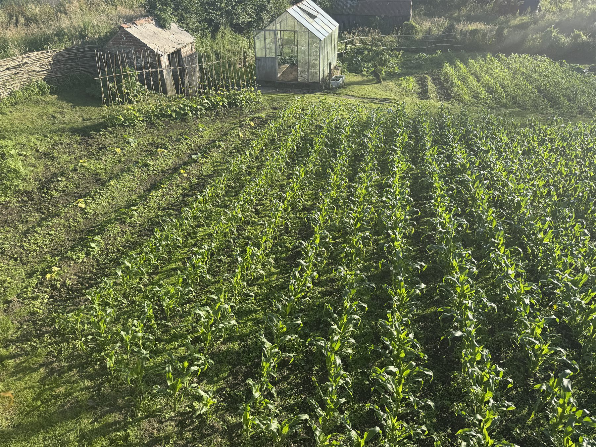
Pick your own at Llannant
Seasonal, like the farm
Pick your own at Llannant follows the crops, not the calendar.
We plant in spring, and the patch opens once there's enough ready to pick. In most years that means sweetcorn and our other summer veg from the end of July to early September, right through the school summer holidays, when we also run our farm tours. Then we open again in October for pumpkins. Over the winter the fields rest and we're busy with the cattle.
The weather decides the exact dates. A warm spell brings the sweetcorn on early, and a wet one slows it down. So we post open days here and on our Facebook page as soon as we know them, and that's the place to check before you set off.
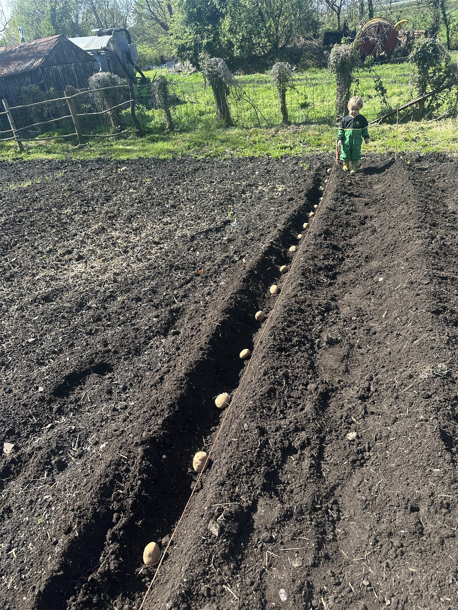
Sweetcorn …
Sweetcorn is our main crop, and the heart of our pick-your-own season.
Walk into the rows, find a cob and twist it off the stalk. Sweetcorn starts turning its sugar to starch soon after picking, so cobs you pick here and cook the same day taste sweeter than anything from a shop.
- Pick as many or as few cobs as you like
- Ready from the end of July, and open through the school summer holidays until early September
- Open at weekends, usually Friday, Saturday and Sunday. Days can change, so check here or on Facebook before you come.
- In season you can also buy our sweetcorn at Shepherds Fruit and Veg on Gorseinon High Street
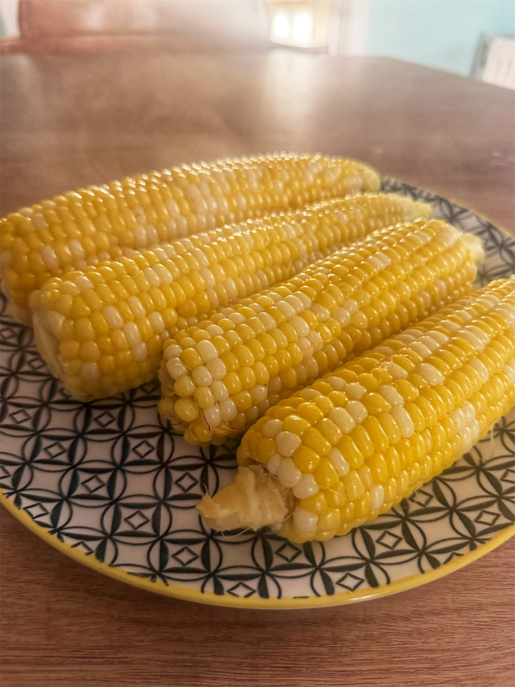
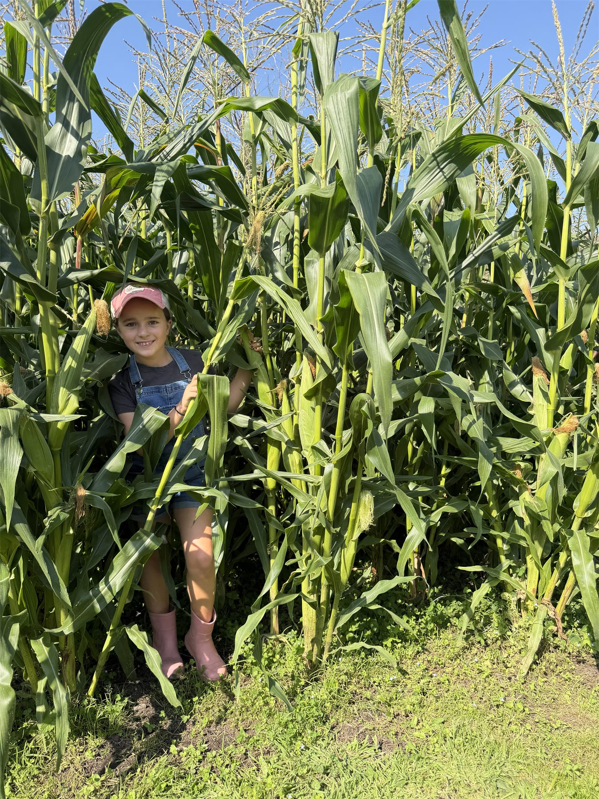
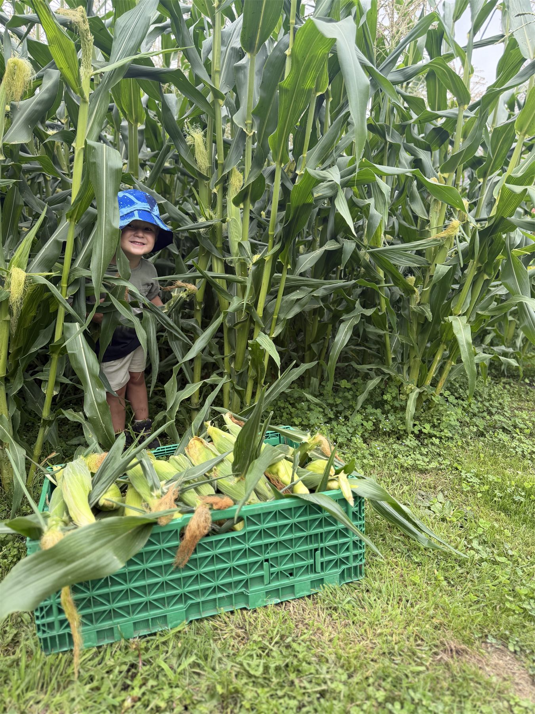
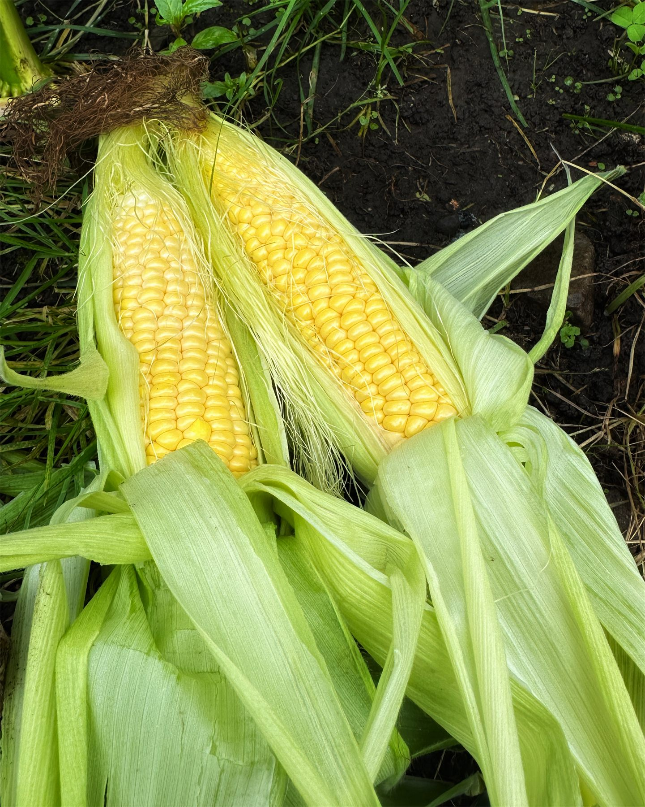
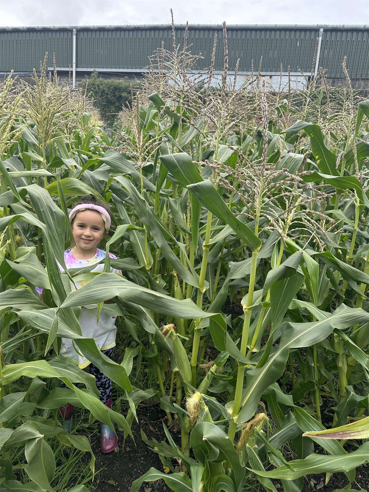

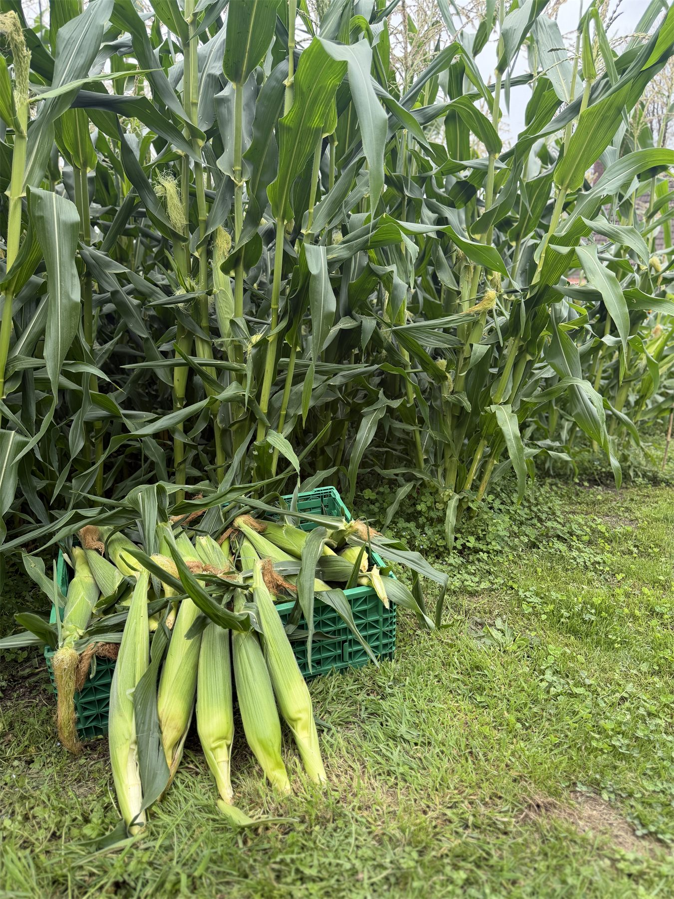
Other summer veg
As well as the sweetcorn, we grow a patch of other veg for you to pick, things like potatoes and beans. We mix it up each year, so what's in the ground changes from one summer to the next.
In past years visitors have picked:
- New potatoes, dug straight from the ground
- Carrots, orange and purple
- Runner beans and green beans
- Beetroot, courgettes and cucumbers
Check our Facebook page to see what's growing this year.
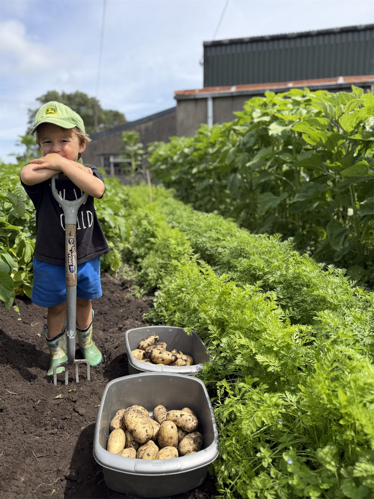
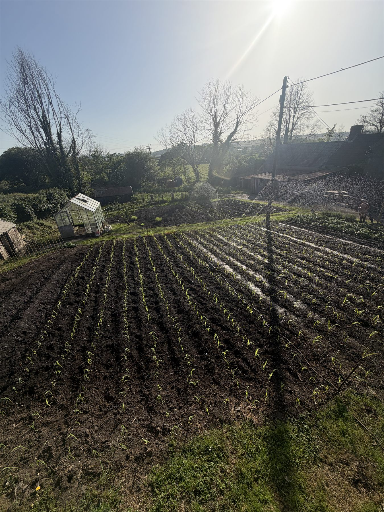
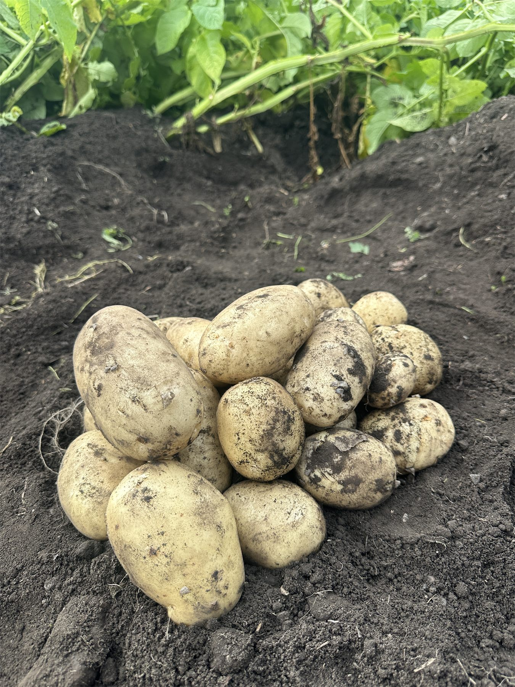
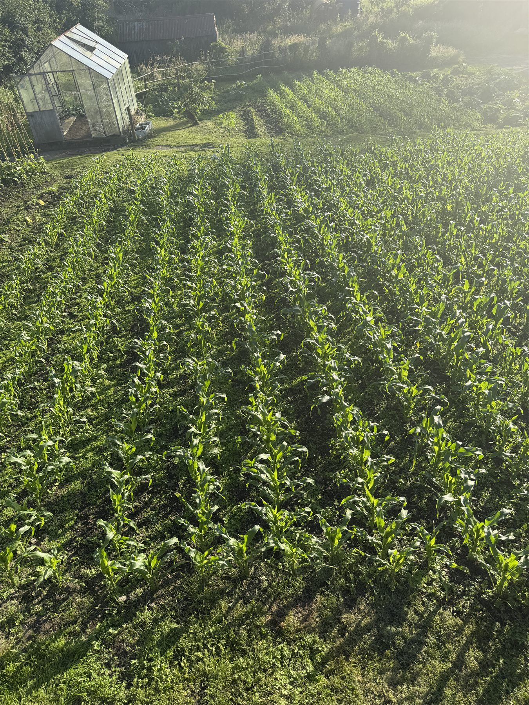
Pumpkins …
The season ends in October with our pumpkin patch: big Loretta pumpkins that make proper carvers, plus smaller ones for little hands. It's a small patch, so once they're gone, they're gone.
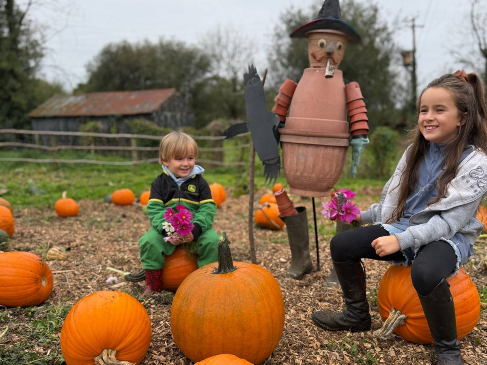
How a visit works
- Come along on an open day. Check here or on Facebook first.
- Park on the big concrete yard as you come into the farm.
- The patch is a short walk down on the left. We'll show you what's ready.
- Pick what you want and pay for what you pick (cash or card?).
- Bring wellies. It's a working field.
Llannant Farm, Penyrheol, Gorseinon, Swansea SA4 4ND
Directions in Google Maps
Good to know
Do I need to book?
No. Just come along on an open day.
Not to pick. Just come along on an open day. If you'd like a farm tour as well, booking a slot guarantees your time.
When exactly are you open?
We open at weekends during the school summer holidays, usually Friday, Saturday and Sunday. The days can change with the weather and the crop, so we post them here and on Facebook as soon as we know.
What if the weather's bad?
If we have to close, we'll post on our Facebook page and update this page.
Can I buy your sweetcorn without picking?
Yes. In season it's also sold at Shepherds Fruit and Veg on Gorseinon High Street.
Can we see the animals?
Yes. Book a farm tour to meet the cattle, the ponies and the tractors. About farm tours